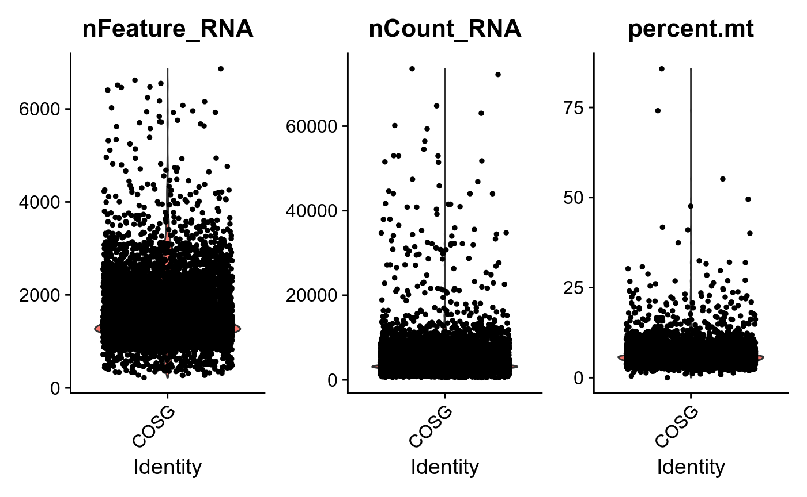
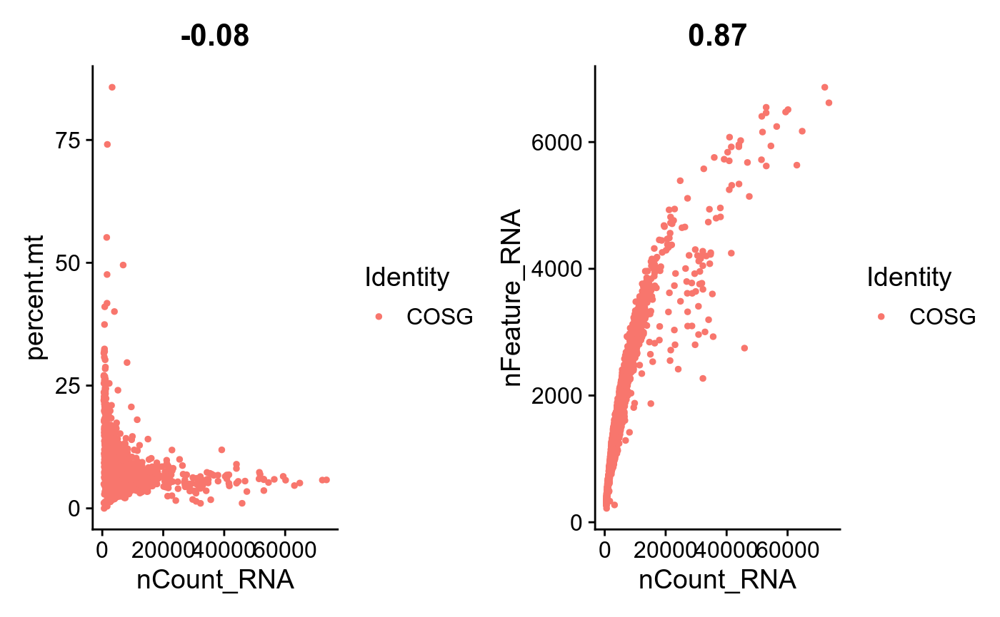
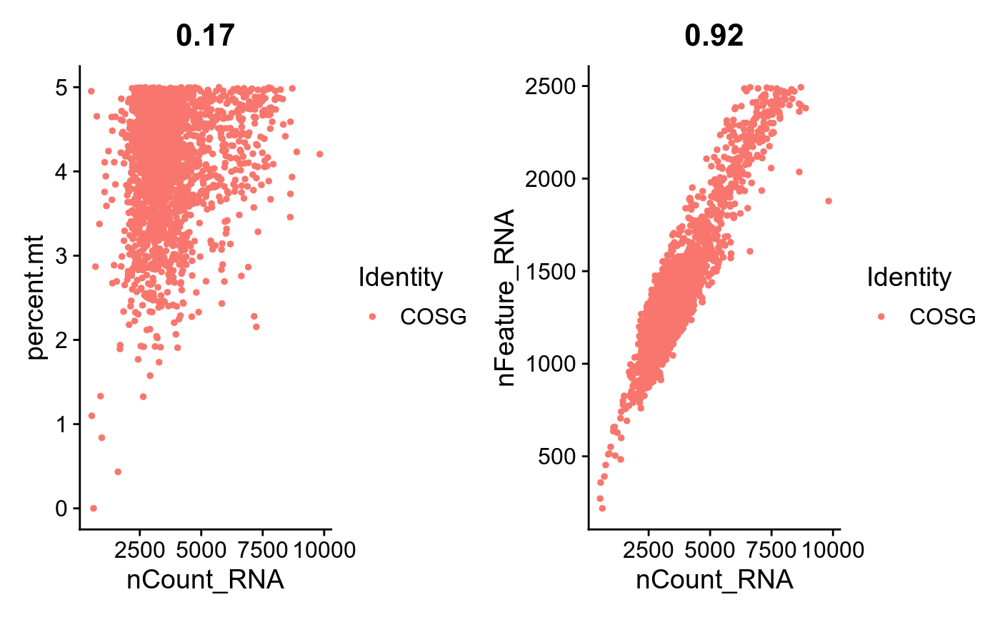
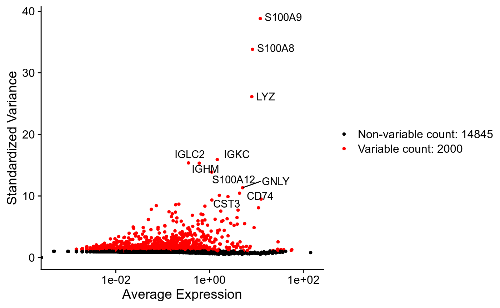
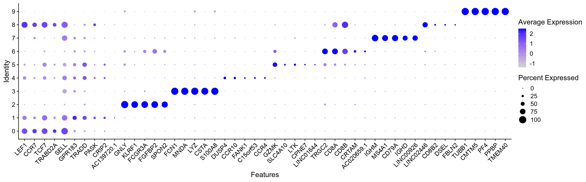
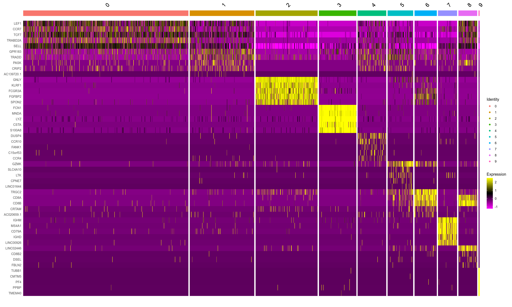

vignettes/pbmc10k_tutorial_cosg.Rmd
pbmc10k_tutorial_cosg.RmdDownload data from 10x Genomics:
# getwd()
download.file("https://cf.10xgenomics.com/samples/cell-exp/3.0.0/pbmc_10k_protein_v3/pbmc_10k_protein_v3_filtered_feature_bc_matrix.h5",
destfile = "./pbmc_10k_protein_v3_filtered_feature_bc_matrix.h5")# Please install hdf5r to read HDF5 files
pbmc10k_raw<-Read10X_h5('./pbmc_10k_protein_v3_filtered_feature_bc_matrix.h5')## Genome matrix has multiple modalities, returning a list of matrices for this genomepbmc10k<-CreateSeuratObject(pbmc10k_raw$`Gene Expression`,assay = 'RNA',project = 'COSG', min.cells = 5, min.features = 200) pbmc10k## An object of class Seurat
## 16845 features across 7856 samples within 1 assay
## Active assay: RNA (16845 features, 0 variable features)pbmc10k[["percent.mt"]] <- PercentageFeatureSet(pbmc10k, pattern = "^MT-")# Visualize QC metrics as a violin plot
VlnPlot(pbmc10k, features = c("nFeature_RNA", "nCount_RNA", "percent.mt"), ncol = 3)
plot1 <- FeatureScatter(pbmc10k, feature1 = "nCount_RNA", feature2 = "percent.mt")
plot2 <- FeatureScatter(pbmc10k, feature1 = "nCount_RNA", feature2 = "nFeature_RNA")
plot1 + plot2
pbmc10k <- subset(pbmc10k, subset = nFeature_RNA > 200 & nFeature_RNA < 2500 & nCount_RNA < 10000 & nCount_RNA > 500 & percent.mt < 5)pbmc10k## An object of class Seurat
## 16845 features across 2080 samples within 1 assay
## Active assay: RNA (16845 features, 0 variable features)plot1 <- FeatureScatter(pbmc10k, feature1 = "nCount_RNA", feature2 = "percent.mt")
plot2 <- FeatureScatter(pbmc10k, feature1 = "nCount_RNA", feature2 = "nFeature_RNA")
plot1 + plot2
pbmc10k <- NormalizeData(pbmc10k, normalization.method = "LogNormalize", scale.factor = 10000)pbmc10k <- FindVariableFeatures(pbmc10k, selection.method = "vst", nfeatures = 2000)
# Identify the 10 most highly variable genes
top10 <- head(VariableFeatures(pbmc10k), 10)
# plot variable features with and without labels
plot1 <- VariableFeaturePlot(pbmc10k)
plot2 <- LabelPoints(plot = plot1, points = top10, repel = TRUE)## When using repel, set xnudge and ynudge to 0 for optimal resultsplot2
pbmc10k <- ScaleData(pbmc10k, features = rownames(pbmc10k))## Centering and scaling data matrixpbmc10k <- RunPCA(pbmc10k, features = VariableFeatures(object = pbmc10k))## PC_ 1
## Positive: EEF1A1, RPS12, TRAC, RPS18, TRBC2, IL32, IL7R, LTB, NOSIP, LEF1
## CD7, CD69, CD27, ITM2A, TRBC1, CD247, CCR7, CD2, GZMM, MAL
## TRABD2A, TRAT1, FLT3LG, CD40LG, AQP3, TNFRSF25, APBA2, CD5, RORA, CHRM3-AS2
## Negative: FCN1, LYZ, MNDA, S100A8, S100A9, CD14, CSTA, CST3, SERPINA1, VCAN
## S100A12, SPI1, CYBB, CFD, MPEG1, CEBPD, CLEC7A, CD68, GRN, CSF3R
## MS4A6A, CLEC12A, KLF4, RGS2, FPR1, TYMP, CD36, AC020656.1, C5AR1, KCTD12
## PC_ 2
## Positive: NKG7, CST7, GZMA, GZMH, KLRD1, PRF1, CCL5, FGFBP2, GNLY, CTSW
## GZMB, FCGR3A, KLRF1, SPON2, B2M, HOPX, EFHD2, CCL4, TRDC, MATK
## CMC1, PRSS23, TTC38, C12orf75, CD63, TBX21, HCST, MYO1F, FCRL6, APMAP
## Negative: TPT1, RPS12, RPS18, EEF1A1, LTB, RPLP1, IL7R, LEF1, NOSIP, CCR7
## TRAC, CD27, MAL, TRABD2A, CD40LG, IL6ST, JUNB, ZFP36L2, SERINC5, MYC
## TRAT1, SATB1, BEX3, CD55, NCF1, ARMH1, AIF1, CHRM3-AS2, SOCS3, TNFRSF25
## PC_ 3
## Positive: IGHM, MS4A1, CD79A, BCL11A, FAM129C, SPIB, IGHD, BANK1, TCL1A, TSPAN13
## LINC00926, HLA-DQA1, HLA-DQB1, FCER2, IRF8, MEF2C, TCF4, VPREB3, HLA-DRA, HLA-DQA2
## CD79B, BLNK, HLA-DPB1, HLA-DRB5, COBLL1, IGKC, CD74, CD22, HLA-DPA1, TNFRSF13C
## Negative: TRAC, IL7R, IL32, JUNB, NOSIP, TMSB4X, LEF1, CD7, HCST, ANXA1
## TPT1, S100A4, S100A6, ITGB2, S100A10, TRBC1, CD27, CD247, NEAT1, CD2
## MAL, TRAT1, ITM2A, SLC2A3, FOS, S100A12, ACTG1, SERINC5, VSIR, S100A9
## PC_ 4
## Positive: SERPINF1, LILRA4, IL3RA, GAS6, PLD4, LRRC26, RHEX, CLEC4C, SCT, PTCRA
## PACSIN1, SMPD3, LAMP5, IRF4, DNASE1L3, DERL3, ITM2C, SCAMP5, ZNF888, FCER1A
## MAP1A, SMIM5, CIB2, TCF4, CCDC50, TPM2, SCN9A, TNFRSF21, AC004846.1, UGCG
## Negative: MS4A1, CD79A, IGHD, LINC00926, FCER2, BANK1, VPREB3, CD22, TNFRSF13C, HLA-DOB
## ADAM28, FCRL1, P2RX5, FCRLA, IGLC2, CD79B, CD19, CD24, CD72, IGHM
## IGLC3, PLPP5, LINC02397, HLA-DQA1, CD40, HLA-DQB1, RALGPS2, EAF2, FCRL2, BLK
## PC_ 5
## Positive: CD9, PRKAR2B, HIST1H2AC, MAP3K7CL, CAVIN2, GNG11, NRGN, PF4, C19orf33, ACRBP
## CMTM5, MPP1, CTTN, TMEM40, PPBP, TUBB1, F13A1, CLU, TSC22D1, RGS18
## PARVB, MYL9, DMTN, TST, SPARC, MTURN, TREML1, AP003068.2, THBS1, GP9
## Negative: EEF1A1, TPT1, RPS18, RPLP1, RPS12, PLAC8, CYBA, ZFP36L2, SERPINF1, HCST
## LILRA4, TYROBP, PLD4, GZMB, MT-CO1, IL3RA, IRF8, TCF4, GAS6, DERL3
## RHEX, CLIC3, LILRB4, CLEC4C, LRRC26, RNASE6, VIM, SMPD3, JUNB, SCTpbmc10k <- FindNeighbors(pbmc10k, dims = 1:15)
pbmc10k <- FindClusters(pbmc10k
# resolution = 0.5
)## Modularity Optimizer version 1.3.0 by Ludo Waltman and Nees Jan van Eck
##
## Number of nodes: 2080
## Number of edges: 81514
##
## Running Louvain algorithm...
## Maximum modularity in 10 random starts: 0.8168
## Number of communities: 10
## Elapsed time: 0 secondsmarker_cosg<-cosg(
pbmc10k,
groups='all',
assay='RNA',
slot='data',
mu=1,
n_genes_user=2000)Check markers:
head(marker_cosg$names)## 0 1 2 3 4 5 6 7
## 1 LEF1 GPR183 GNLY FCN1 DUSP4 GZMK TRGC2 IGHM
## 2 CCR7 TRADD KLRF1 MNDA CCR10 SLC4A10 CD8A MS4A1
## 3 TCF7 PASK FCGR3A LYZ FANK1 LTK CD8B CD79A
## 4 TRABD2A CRIP2 FGFBP2 CSTA C15orf53 CPNE7 CRTAM IGHD
## 5 SELL AC139720.1 SPON2 S100A8 CCR4 LINC01644 AC020659.1 LINC00926
## 6 NOSIP AP3M2 GZMB S100A9 FOXP3 TSPAN15 KLRG1 BCL11A
## 8 9
## 1 LINC02446 TUBB1
## 2 CD8B CMTM5
## 3 CD8B2 PF4
## 4 DSEL PPBP
## 5 FBLN2 TMEM40
## 6 S100B CTTNCheck scores:
head(marker_cosg$scores)## 0 1 2 3 4 5 6
## 1 0.5112298 0.1983444 0.9199549 0.9703298 0.4933155 0.3647031 0.4490881
## 2 0.5105121 0.1654157 0.9069867 0.9609553 0.4347762 0.3560721 0.4184702
## 3 0.4667756 0.1652340 0.8404576 0.9569131 0.3377563 0.3358231 0.2437492
## 4 0.4630908 0.1419786 0.8064928 0.9550107 0.3303547 0.2869962 0.2155549
## 5 0.4576883 0.1407042 0.8031722 0.9530925 0.2930473 0.2712109 0.1928761
## 6 0.4553455 0.1399450 0.7973119 0.9517717 0.2677429 0.2515382 0.1862127
## 7 8 9
## 1 0.8644972 0.5740887 0.9884659
## 2 0.8532755 0.2986541 0.9759355
## 3 0.8329061 0.2802284 0.9698318
## 4 0.7799647 0.2404015 0.9685507
## 5 0.7706480 0.2289249 0.9684973
## 6 0.7339749 0.1902490 0.9600918top_list<-c()
for (group in colnames(marker_cosg$names)){
top_i<-marker_cosg$names[group][1:5,1]
top_list<-c(top_list,top_i)
}DotPlot(pbmc10k,
assay = 'RNA',
# scale=TRUE,
features = unique(top_list)) + RotatedAxis()
DoHeatmap(pbmc10k,
assay = 'RNA',
features = top_list) 